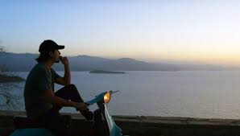

Film dans les quelles il a joué:

Documentaire sur l'album "Les étoiles vagabondes":
Quand deux étoiles sont trop proches et que l'une d'elles explose en supernova, il arrive qu'elle condamne l'autre étoile à errer sans trajectoire dans l'univers. On les appelle les étoiles vagabondes. Ce film retrace la conception du 3e album de Nekfeu, entre Paris, le Japon, la Grèce et les USA.
Tous nous sépare:
Un film dans le quelle Nekfeu jou le rôle de Ben, un jeune homme sans histoire vivant dans une cité du Sud de la France qui va faire chanter deux femmes bourgeoises responsables de la disparition de son meilleur ami Rodolphe.